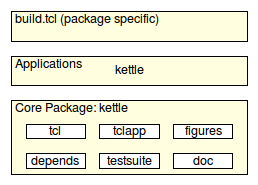

[ Home | Main Table Of Contents | Table Of Contents | Keyword Index ]
kettle(n) 1 doc "Kettle - The Quick Brew System"
Name
kettle - Kettle - Core
Table Of Contents
- Table Of Contents
- Synopsis
- Description
- Overview
- Build declarations
- Graphical Interface Support
- Tool handling
- Recursive invokations
- Option database
- Option Types and Validation
- Path utilities
- Recipe database
- Status management
- IO virtualization
- General Utilities
- License
- Bugs, Ideas, Feedback
- Keywords
- Category
Synopsis
- package require Tcl 8.5
- kettle tcl
- kettle tclapp path
- kettle critcl3
- kettle depends-on path...
- kettle doc-destination path
- kettle doc ?docroot?
- kettle figures ?figroot?
- kettle gh-pages
- kettle testsuite ?testroot?
- kettle gui make
- kettle tool declare names ?validator?
- kettle tool get name
- kettle invoke
- kettle option define
- kettle option onchange
- kettle option no-work-key
- kettle option exists
- kettle option names
- kettle option help
- kettle option set
- kettle option set-default
- kettle option set!
- kettle option unset
- kettle option get
- kettle option type
- kettle option save
- kettle option load
- kettle option config
- kettle ovalidate enum
- kettle ovalidate any
- kettle ovalidate string
- kettle ovalidate boolean
- kettle ovalidate listsimple
- kettle ovalidate directory
- kettle ovalidate readable.file
- kettle ovalidate path
- kettle path bench-file path
- kettle path bindir ?path?
- kettle path cat path arg...
- kettle path cathead path n arg...
- kettle path copy-file src dstdir
- kettle path copy-files dstdir arg...
- kettle path critcl3-package-file file
- kettle path diagram-file path
- kettle path doctools-file path
- kettle path dry-barrier ?dryscript?
- kettle path exec arg...
- kettle path fixhashbang file shell
- kettle path foreach-file path pv script
- kettle path grep pattern data
- kettle path htmldir ?path?
- kettle path in path script
- kettle path incdir ?path?
- kettle path install-application src dstdir
- kettle path install-file-group label dstdir arg...
- kettle path install-file-set label dstdir arg...
- kettle path install-script src dstdir shell
- kettle path kettle-build-file path
- kettle path libdir ?path?
- kettle path mandir ?path?
- kettle path norm path
- kettle path pipe lv script arg...
- kettle path relative base dst
- kettle path relativecwd dst
- kettle path relativesrc dst
- kettle path remove-path base path
- kettle path remove-paths base arg...
- kettle path rgrep pattern data
- kettle path scan label root predicate
- kettle path script
- kettle path set-executable path
- kettle path sourcedir ?path?
- kettle path strip path prefix
- kettle path tcl-package-file file
- kettle path tcltest-file path
- kettle path tmpfile ?prefix?
- kettle path uninstall-application src dstdir
- kettle path uninstall-file-group label dstdir
- kettle path uninstall-file-set label dstdir arg...
- kettle path write path contents arg...
- kettle recipe define
- kettle recipe parent
- kettle recipe exists
- kettle recipe names
- kettle recipe help
- kettle recipe run
- kettle status begin
- kettle status fail
- kettle status ok
- kettle status is
- kettle status save
- kettle status load
- kettle status clear
- kettle io setwidget w
- kettle io for-gui script
- kettle io for-terminal script
- kettle io puts arg...
- kettle io trace text
- kettle io trace-on
- kettle io animation begin
- kettle io animation write text
- kettle io animation indent text
- kettle io animation last text
- kettle io tag script
- kettle io mtag text
- lambda arguments body ?arg...?
- lambda@ namespace arguments body ?arg...?
- try arg...
- kettle strutil indent text prefix
- kettle strutil padl list
- kettle strutil padr list
- kettle strutil reflow text ?prefix?
- kettle strutil undent text
Description
Welcome to Kettle, a set of packages providing support for writing build code for Tcl packages.
Please read the document Kettle - Introduction to Kettle, if you have not done so already, to get an overview of the whole system.
This document is the reference to all commands provided by the kettle package, from the user-visible declarations to the lowest utilities.
It is intended for both power-users wishing to write their own high-level commands linking into the existing foundations and developers and maintainers of kettle itself.
A basic user should read Kettle - Application - Build Interpreter and Kettle - Build Declarations instead.
Overview
The high-level architecture is shown in the image below:

This document is concerned with the lowest level shown, the core kettle package itself. The inner boxes of that architectural box show the parts which are user-visible, i.e. providing the DSL commands explained in Kettle - Build Declarations. For the details we have

In this image we now see all the components found inside of the kettle package, their organization into layers and their dependencies. The latter is actually a bit simplified, showing only the dependencies between adjacent layers and leaving out the dependencies crossing layers. Adding them would make the image quite a bit more crowded.
The green boxes are again the user-visible parts, either for the build declarations. The rest is internal. Note how and that the components found in the blue box are all dependent on each other, i.e. these are in circular dependencies.
The names in the boxes directly refer to the file names containing the code of the component, without the extension, ".tcl". The only file not mentioned is "kettle.tcl" which is the entrypoint to the package and sources all the others. Each component C is generally served by a single ensemble command, "kettle C". The exceptions are the components exporting the user-visible declaration commands. Their commands, while still named "kettle C", are not ensembles, but the one command in that component.
The following sections go through the components from the top down to the bottom, starting with the user visible commands described in Kettle - Build Declarations, covering all the green boxes. For the remainder:
- gui
- tool
- invoke
- option
- ovalidate
- path
- recipe
- status
- io
- lambda
- try
- strutil
Not convered in the above is "standard.tcl". This file does not export any commands to document. It unconditionally defines the standard recipes instead. These are the recipes which are always available, in contrast to the recipes dynamically created by the declarations commands in response to their scanning of a package source directory.
Build declarations
- kettle tcl
This command declares the presence of one or more Tcl packages in the package source directory.
The package source directory is scanned to locate them. Packages are detected by finding a marker (Tcl command) of the form
package provide NAME VERSIONin a file, where both NAME and VERSION must be literal strings, not commands, nor variable references. It is best recognized when found alone on its line. Note that files containing an anti-marker of the form
package require critclare rejected as Tcl packages. Use the command kettle critcl3 to detect such packages, mixing Tcl and C. In each accepted package file the command further looks for and recognizes embedded pragmas of the form
# @owns: PATH
which provides kettle with information about files belonging to the same package without directly providing it. This can be data files, or other Tcl files sourced by the main package file.
For each detected package P two recipes are defined, to install and uninstall this package, namely:
- install-package-P
- uninstall-package-P
The command further extends the recipes
- install-tcl-packages
- install-packages
- install
- uninstall-tcl-packages
- uninstall-packages
- uninstall
generating a recipe tree matching
install -> install-packages -> install-tcl-packages -> install-app-$path uninstall -> uninstall-packages -> uninstall-tcl-packages -> uninstall-app-$pathThe extended recipes may be created by this process. As other declarations create similar trees these get merged together, enabling a user to install parts of the sources at various levels of specifity, from just a specific package up to all and sundry.
Tcl packages are installed into the directory specified by option --lib-dir despite technically not being binary files.
To simplify usage the command heuristically detects documentation and testsuites by means of internally calling the commands kettle doc and kettle testsuite with default path arguments ("doc" and "tests" respectively).
If documentation and/or testsuite are placed in non-standard locations these commands have to be run before kettle tcl, with the proper paths.
If dependencies have been specified, via kettle depends-on, the package specific install and debug recipes will recusively invoke install or debug on them before building the package itself.
- kettle tclapp path
This command declares the presence of a Tcl script application found at the path under the package source directory.
If the specified application is found the command will define two recipes to install and uninstall this application, namely:
- install-app-path
- uninstall-app-path
It will further extend the recipes
- install-tcl-applications
- install-applications
- install
- uninstall-tcl-applications
- uninstall-applications
- uninstall
generating a recipe tree matching
install -> install-applications -> install-tcl-applications -> install-app-$path uninstall -> uninstall-applications -> uninstall-tcl-applications -> uninstall-app-$pathThe extended recipes may be created by this process. As other declarations create similar trees these get merged together, enabling a user to install parts of the sources at various levels of specifity, from just a specific application up to all and sundry.
Script applications are installed into the directory specified by option --bin-dir despite technically not being binary files.
- kettle critcl3
This command declares the presence of one or more critcl-based Tcl packages in the package source directory, mixing C and Tcl.
The package source directory is scanned to locate them. Packages are detected by finding two markers (Tcl commands) in the file. These markers are of the form
package provide NAME VERSIONand
package require critclBoth NAME and VERSION must be literal strings, not commands, nor variable references. They are best recognized when found alone on their respective lines.
For each detected package P three recipes are defined, to install and uninstall this package. Installation comes in two variants, regular and debug:
- install-package-P
- debug-package-P
- uninstall-package-P
The command further extends the recipes
- install-binary-packages
- install-packages
- install
- debug-binary-packages
- debug-packages
- debug
- uninstall-binary-packages
- uninstall-packages
- uninstall
generating a recipe tree matching
install -> install-packages -> install-binary-packages -> install-app-$path debug -> debug-packages -> debug-binary-packages -> debug-app-$path uninstall -> uninstall-packages -> uninstall-binary-packages -> uninstall-app-$pathThe extended recipes may be created by this process. As other declarations create similar trees these get merged together, enabling a user to install parts of the sources at various levels of specifity, from just a specific package up to all and sundry.
Critcl-based packages are installed into the directory specified by option --lib-dir. Critcl's choice of the target configuration to build for can be overrriden via option --target. Kettle's choice of which critcl application to use cane overriden by option --with-critcl3, except if kettle found a critcl package and runs everything itself instead of invoking critcl child processes.
To simplify usage the command heuristically detects documentation and testsuites by means of internally calling the commands kettle doc and kettle testsuite with default path arguments ("doc" and "tests" respectively).
If documentation and/or testsuite are placed in non-standard locations these commands have to be run before kettle critcl3, with the proper paths.
If dependencies have been specified, via kettle depends-on, the package specific install and debug recipes will recusively invoke install or debug on them before building the package itself.
- kettle depends-on path...
This command declares that the current sources depend on the packages in the specified directories. These are best specified as relative directories and most useful in package bundles where multiple dependent packages are managed in a single source repository.
The arguments can be paths to files too. In that case the files are assumed to be the build declaration files of the required packages in question. In case of a directory path kettle will search for the build declaration file it needs. This information is currently only used by the package-specific "install" and "debug" recipes generated by the kettle commands kettle tcl and kettle critcl.
- kettle doc-destination path
The "doc" recipe generated by the kettle doc command (see below) saves the conversion results into the sub-directory specified by option --with-doc-destination.
This command declares that the results should be put into the specified non-standard path instead of the default of "embedded". To take effect it has to be run before kettle doc is run. Note that the user is still able to override with by setting --with-doc-destination on the command line.
- kettle doc ?docroot?
This command declares the presence of doctools-based documentation files under the directory docroot, which is a path relative to the source directory.
If not specified docroot defaults to "doc".
While this command can be invoked multiple times, only the first invokation will have an effect. Every invokation after that is ignored. The commands kettle tcl, kettle critcl3, and kettle gh-pages run this command implicitly, with the default paths. This means that if documentation is stored in a non-standard location kettle doc must be run explicitly before them, with the proper path.
The package documentation directory is scanned to locate the documentation files. They are recognized by containing any of the marker strings
"[manpage_begin"
"--- doctools ---"
"tcl.tk//DSL doctools//EN//"
in their first 1024 characters. Possible documentation files are rejected should they contain any of the anti-markers
"--- !doctools ---"
"!tcl.tk//DSL doctools//EN//"
in their first 1024 characters. This last is necessary as doctools include file feature allows the actual document content to start in an include file which cannot operate without being includes from a master file configuring it.
When documentation files are found the command will define recipes to convert the documentation into manpages and HTML files, plus recipes install the conversion results. The conversion results themselves are stored as specified by kettle doc-destination (see above) and associated options.
- doc
- install-doc-html
- install-doc-manpages
- uninstall-doc-html
- uninstall-doc-manpages
The command further extends the recipes
- install-doc
- install
- uninstall-doc
- uninstall
generating a recipe tree matching
install -> install-doc -> install-doc-html -> install-doc-manpages uninstall -> uninstall-doc -> uninstall-doc-html -> uninstall-doc-manpagesThe extended recipes may be created by this process. As other declarations create similar trees these get merged together, enabling a user to install parts of the sources at various levels of specifity, from just a specific type of documentation up to all and sundry.
HTML documentation is stored under the directory specified by option --html-dir. Manpages are stored under the directory specified by option --man-dir. The "doc" recipe uses the dtplite application to perform the various conversions.
To simplify usage the command heuristically detects tklib/diagram based figures by means of internally calling the command kettle figures with default path arguments ("doc-sources/figures}".
If the figures are placed in a non-standard location this command has to be run before kettle doc, with the proper paths.
- kettle figures ?figroot?
This command declares the presence of diagram-based figures under the directory figroot, which is a path relative to the source directory.
If not specified figroot defaults to "doc/figures".
While this command can be invoked multiple times, only the first invokation will have an effect. Every invokation after that is ignored. The command kettle doc (and indirectly kettle tcl and kettle critcl3) runs this command implicitly, with the default paths. This means that if diagrams are stored in a non-standard location kettle figures must be run explicitly before them, with the proper path.
The package diagram directory is scanned to locate the diagram files. They are recognized by containing the marker string
"tcl.tk//DSL diagram//EN//"
in their first 1024 characters.
When diagram files are found the command will define recipes to convert the diagrams into PNG raster images (saved as siblings to their source files), and to render the diagrams on a Tk canvas.
- figures
- show-figures
The recipes use the dia application (of tklib) to perform the conversions, and GUI rendering.
- kettle gh-pages
This command declares the presence of a gh-pages branch in the repository, as is used by, for example, http://github.com, to manage the web-site for a project in the rpeository of the project.
The command confirms the presence of documentation and that the local repository is git-based. If neither is true nothing done.
While this command can be invoked multiple times, only the first invokation will have an effect. Every invokation after that is ignored. It runs the command kettle doc command implicitly, with the default paths, to ensure that its own check for documentation work properly. This means that if documentation is stored in a non-standard location kettle doc must be run explicitly before this command, with the proper path.
When the above tests pass the command will define a recipe named gh-pages, which performs all the automatable steps to copy the embedded documentation of the project into its gh-pages branch. Afterward the checkout is left at the gh-pages branch, for the user to review and commit. While the last step could be automated the review cannot, making the point moot.
- kettle testsuite ?testroot?
This command declares the presence of a tcltest-based testsuite under the directory testroot, which is a path relative to the source directory.
If not specified testroot defaults to "tests".
While this command can be invoked multiple times, only the first invokation will have an effect. Every invokation after that is ignored. The commands kettle tcl and kettle critcl3) run this command implicitly, with the default paths. This means that if a testsuite is stored in a non-standard location kettle testsuite must be run explicitly before them, with the proper path.
The package testsuite directory is scanned to locate the test files. They are recognized by containing the marker string
"tcl.tk//DSL tcltest//EN//"
in their first 1024 characters.
When testsuites are found the command will define a recipe to run them. This recipe will recursively invoke the recipes "debug" (or "install" if the former does not exist, or fails) before performing the tests, installing the package under test (and its dependencies) in a local directory for use by the testsuites. The supporting commands provided by kettle (see Kettle - Testsuite Support) know how to use this.
- test
The verbosity of testsuite output to the terminal is specified by the option --log-mode. The ability to save testsuite output to a series of files is specified by the option --log. The tclsh shell used for running the testsuites is specified by option --with-shell.
Graphical Interface Support
This layer contains the command for the creation of the standard graphical interface to the system.
- kettle gui make
This high-level command creates a standard graphical interface providing access to all options and defined recipes, through two tabs in a notebook.
Options are handled by type specific fields, the details of which are created by the option type definitions found under kettle ovalidate, as specified in section Option Types and Validation.
Recipes are acessible through one button per recipe.
Output is written to a text widget acting as a log window, in the same tab which contains the action buttons.
Tool handling
This layer contains commands to manage the declaration of a dependency on external comands, and their use.
- kettle tool declare names ?validator?
This command declares the need for an external tool which can have any of the listed names. The first element of that list is the name the tool will be known under within kettle, also called the primary name of the tool. This is the name to hand to kettle tool get below to retrieve the tool's location.
Similarly the primary name is used to define an option named --with-name, used to hold the path found by searching for the tool on the PATH under its various names, and to allow the user to override kettle's choice.
If validator is specified it will be treated as the body of an anonymous procedure with a single argument cmd, the path of the tool found on PATH and returning a boolean value telling the caller if this path is acceptable (result == true), or not. In case of the latter the system will continue searching with the next name in names.
- kettle tool get name
This command returns the path to the named tool, assuming that it was declared before. If no such tool is specified the command prints an error message and aborts the execution of the current recipe and its callers.
Recursive invokations
The commands of this layer enable recipes to recursively invoke other recipes, for the current and in other packages.
Option database
This layer manages the option database, which both holds the configuration options, their definitions and values, as also named shared global state.
- kettle option define
- kettle option onchange
- kettle option no-work-key
- kettle option exists
- kettle option names
- kettle option help
- kettle option set
- kettle option set-default
- kettle option set!
- kettle option unset
- kettle option get
- kettle option type
- kettle option save
- kettle option load
- kettle option config
Option Types and Validation
This layer defines the validation types usable by the options.
Path utilities
This layer contains the commands ...
- kettle path bench-file path
- kettle path bindir ?path?
- kettle path cat path arg...
- kettle path cathead path n arg...
- kettle path copy-file src dstdir
- kettle path copy-files dstdir arg...
- kettle path critcl3-package-file file
- kettle path diagram-file path
- kettle path doctools-file path
- kettle path dry-barrier ?dryscript?
- kettle path exec arg...
- kettle path fixhashbang file shell
- kettle path foreach-file path pv script
- kettle path grep pattern data
- kettle path htmldir ?path?
- kettle path in path script
- kettle path incdir ?path?
- kettle path install-application src dstdir
- kettle path install-file-group label dstdir arg...
- kettle path install-file-set label dstdir arg...
- kettle path install-script src dstdir shell
- kettle path kettle-build-file path
- kettle path libdir ?path?
- kettle path mandir ?path?
- kettle path norm path
- kettle path pipe lv script arg...
- kettle path relative base dst
- kettle path relativecwd dst
- kettle path relativesrc dst
- kettle path remove-path base path
- kettle path remove-paths base arg...
- kettle path rgrep pattern data
- kettle path scan label root predicate
- kettle path script
- kettle path set-executable path
- kettle path sourcedir ?path?
- kettle path strip path prefix
- kettle path tcl-package-file file
- kettle path tcltest-file path
- kettle path tmpfile ?prefix?
- kettle path uninstall-application src dstdir
- kettle path uninstall-file-group label dstdir
- kettle path uninstall-file-set label dstdir arg...
- kettle path write path contents arg...
Recipe database
This layer contains the commands managing the database of all known recipes, ready for execution.
Status management
The command of this layer manage the status of the currently executing recipe and the database holding the knowledge about all executed recipes, keyed by their name, location and relevant configuration. This database is shared among instances of kettle during recursive invokation.
IO virtualization
This section describes the IO virtualization layer used to decouple the higher layer's output from the actual destination, terminal or gui log window.
- kettle io setwidget w
This command sets the text widget to use for output, redirecting all output made through kettle io puts and kettle io trace from the terminal to this widget.
- kettle io for-gui script
- kettle io for-terminal script
These two commands execute the script in their calling context if the IO system is using text widget or terminal for output, respectively.
- kettle io puts arg...
This command is an emulation of Tcl's builtin puts which writes to either a terminal (default), or a text widget. The latter happens only if such a widget was set with kettle io set-widget.
The full syntax of the builtin puts is implemented.
This redirection affects only the standard channels however, all other channels given to the command will go to their proper files, sockets, etc.
- kettle io trace text
This command is the tracing of kettle internals. It will not produce output until kettle io trace-on is invoked. The specified text is run through a round of substitution (in the callers context), resolving variables and commands embedded into it. This allows the use of brace-quoting, preventing the execution of such embedded commands while tracing is disabled.
- kettle io trace-on
This command activates the tracing of internals, enabling kettle io trace to produce output.
- kettle io animation begin
This command is the first in a group of four implementing the foundations for text-based progress bars and the like.
When invoked it initializes the internal state for writing on the last line of the terminal without moving into the next line. This sets the maximum column used to 0, and the current prefix to the empty string.
- kettle io animation write text
This command writes the concatenation of the current prefix and input text to the current line, clearing and then overwriting the previous content of the same line. By writing different texts an animation effect can be generated, with only the prefix staying constant. The command takes care to track the largest column characters have been written to and to clear them even if the current string does not cover them.
- kettle io animation indent text
This command extends the current prefix with text. Nothing else happens.
- kettle io animation last text
This command is the last in the group of four handling animation effects. It first writes the text as usual and then moves the terminal to the next line, making text the last shown string of the animation and that which is kept shown.
- kettle io tag script
This command activates the color named by tag, then executes the script and lastly resets the output to the standard colors.
This means that output generated by IO commands in the script have the activated color. Note that the command does not support the nesting of color activations.
The allowed color tags are:
- ok
- warn
- err
- note
- debug
- red
- green
- yellow
- blue
- magenta
- cyan
- white
- kettle io mtag text
This command is similar to the previous, except that all color tags are prefixed with m (for markup) and the argument is a string, not a script. The string is extended with color control commands activating and deactivating the chosen color at beginning and end, and then returned as the result of the command.
General Utilities
This, the lowest layer of the system contains general utility commands for string processing, anonymous procedures and error handling.
Anonymous procedures
- lambda arguments body ?arg...?
- lambda@ namespace arguments body ?arg...?
These commands are wrappers around Tcl 8.5's builtin apply command, making the creation of anonymous procedures a bit easier. Apply uses nested lists, the API here flattens that, matching the API of proc.
The command arguments are like for proc, with three exceptions.
There is no procedure name. Obviously.
After the procedure body we can pre-specify some or all of the procedure arguments, i.e. perform currying.
The @-variant takes the name of the namespace the body will be executed in.
Error handling
- try arg...
This command is an implementation of Tcl 8.6's try/trap/finally command in pure Tcl, providing forward-compatibility with 8.6 in this respect. (Iit is just too useful when it comes to erro handling, especially cleanup of transient things like temp files).
Syntax and semantics fully match the Tcl 8.6 command. The code was written by Donal Fellows, it is the initial implementation of the builtin, before it got re-implemented in C and byte-coded.
String processing
- kettle strutil indent text prefix
This command splits the input text into lines, indents each line using the prefix and then returns the re-joined text.
Note that the prefix is not applied to empty lines (containing only whitespace). Any whitespace in empty lines is actually completely eliminated.
- kettle strutil padl list
- kettle strutil padr list
These two commands take a list of strings, compute the maximum length and then pads all shorter strings to this length (using spaces), returning the modified list. The order of the strings in the result is not changed. The commands differ in where the padding is applied.
padr adds the spaces at the end of the string (to the right) yielding a left-aligned result. Whereas padl adds the spaces at the beginning of the string (to the left) yielding a right-aligned result.
Regardless of the differences, the result is a list of strings of the same length. Useful when having to print a table. Provide a column of the table as input, and the result is properly aligned for printing.
- kettle strutil reflow text ?prefix?
This command strips empty header and footer lines from the input text, undents it and then re-indents using the prefix. If the latter is not specified it will default to 4 spaces.
The result of all the modifications is then returned as the result of the command.
- kettle strutil undent text
This command splits the input text into lines, computes longest common prefix of whitespace over all lines, removes that prefix and then returns the re-joined text.
The effect is an un-indenting of the lines in the text which preserves the general shape of the left margin.
Note that empty lines (containing only whitespace) do not take part in the prefix calculation. Any whitespace in empty lines is actually completely eliminated.
License
This package, written by Andreas Kupries, is BSD licensed.
Bugs, Ideas, Feedback
This document, and the package it describes, will undoubtedly contain bugs and other problems. Please report such at the Kettle Tracker. Please also report any ideas for enhancements you may have for either package and/or documentation.
Category
Build support